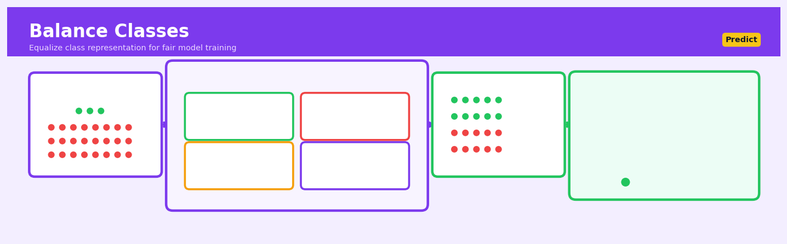

Balance Classes#


The biggest mistake teams make is balancing classes after splitting their data, which leaks information from the test set into training through synthetic sample generation or removal decisions. Always balance only your training set and leave validation and test sets in their natural imbalanced state to get honest performance metrics. Remember that class weighting is often safer than resampling for production pipelines since it avoids data manipulation entirely and works seamlessly with online learning.
The 60-Second Version#
What it does: Balance Classes adjusts your training data so rare events get as much attention as common ones when teaching a machine learning model.
When to use it: When the outcome you care about—fraud cases, equipment failures, customer churn—happens far less often than normal business-as-usual events.
What you get back: A model that actually catches the rare-but-important cases instead of just predicting “everything is normal” and being right 95% of the time but useless.
Difficulty |
Easy |
Typical runtime |
Seconds to minutes on 100K rows |
What you bring |
Training data with unequal class distribution and target labels |
What you get |
Rebalanced training data or adjusted model weights |
Heuristix bucket |
Predict — Machine Learning & Forecasting |
A model trained on imbalanced data will optimize for overall accuracy by ignoring your rare-but-critical events—Balance Classes forces it to care about what actually matters to your business.
Learning Objectives#
After reading this chapter, a business user will be able to:
Identify situations where class imbalance is degrading model performance, such as fraud detection systems that miss rare fraudulent transactions or churn models that fail to predict most at-risk customers.
Interpret evaluation metrics like precision, recall, and F1-score to assess whether a balanced model is successfully detecting minority class cases without generating excessive false alarms.
Decide whether to prioritize detecting more minority class cases (through aggressive balancing) or maintaining prediction precision (through conservative balancing) based on the business costs of false positives versus false negatives.
After reading this chapter, a data scientist will be able to:
Implement appropriate balancing strategies—including SMOTE, random oversampling, random undersampling, and class weights—while avoiding data leakage between training and validation sets.
Tune the target class distribution ratio and sampling parameters by evaluating their impact on class-specific recall, precision, and overall model calibration for probability estimates.
Diagnose whether poor minority class performance stems from genuine class imbalance versus insufficient features, overlapping class distributions, or label noise that balancing cannot resolve.
Overview#
Balance Classes is a data preprocessing technique that addresses class imbalance in classification problems by adjusting the distribution of training samples across target classes. Its core purpose is to prevent machine learning models from developing systematic bias toward majority classes, which would otherwise result in poor predictive performance on minority classes that are often the most business-critical. This family of methods encompasses data-level approaches (resampling techniques including oversampling, undersampling, and synthetic data generation) as well as algorithm-level approaches (cost-sensitive learning and threshold adjustment), all unified by the goal of equalising the effective influence of each class during model training.
When to Use This#
Use when detecting rare but costly events: Fraud detection, equipment failure prediction, or disease diagnosis where the target class may represent less than 1–5% of observations, and failing to detect these events carries severe business consequences.
Use when model evaluation reveals class-biased predictions: If your classifier achieves high overall accuracy but poor recall on minority classes, or if confusion matrices show systematic misclassification of underrepresented categories.
Use when the cost of errors is asymmetric: In credit risk modelling where approving a defaulting borrower (false negative) is far more costly than rejecting a creditworthy applicant (false positive), class balancing helps the model internalise this asymmetry.
Use when collecting more minority class samples is impractical: Medical datasets with rare conditions, cybersecurity logs with infrequent attacks, or manufacturing data with uncommon defects where obtaining additional positive examples is prohibitively expensive or time-consuming.
Use when tree-based or distance-based models underperform on minority classes: Decision trees, random forests, and k-nearest neighbours are particularly susceptible to class imbalance as their splitting and voting mechanisms naturally favour majority classes.
Do NOT use when classes are naturally balanced or nearly balanced: Applying balancing techniques to datasets with class ratios better than 70:30 often introduces unnecessary noise and can degrade model performance.
Do NOT use when the imbalance reflects true population proportions you wish to preserve: In some actuarial or epidemiological applications, maintaining the natural class distribution is essential for producing calibrated probability estimates.
Do NOT use as a substitute for better feature engineering: Class balancing cannot compensate for fundamentally uninformative features; if classes are not separable in the feature space, resampling will not create separability.
Do NOT use without careful validation strategy adjustment: Balancing must occur only on training data; applying it before train-test splitting will produce overly optimistic performance estimates and data leakage.
Do NOT use synthetic oversampling with very high-dimensional sparse data: Techniques like SMOTE can produce unrealistic synthetic samples when the feature space is sparse, potentially degrading rather than improving model performance.
Questions This Answers#
Understanding Performance Gaps#
Why is our fraud detection system catching less than 5% of actual fraud cases while flagging thousands of legitimate transactions?
Why does our customer churn model always predict customers will stay, even though 15% leave every quarter?
Our quality control AI approved 10,000 defective units last month — why didn’t it catch them when defects are clearly labeled in the training data?
Why are we missing 90% of high-value customer opportunities when our model says it’s 95% accurate?
The model keeps predicting “normal operation” even when equipment failures are imminent — what’s going wrong?
Improving Critical Business Outcomes#
How can we better predict which loan applications will default when defaults only represent 3% of our portfolio?
What do we need to change so our model actually identifies the rare diseases that matter most to patient outcomes?
Can we train our system to catch the 50 critical safety incidents per year without generating 10,000 false alarms?
How do we get our retention model to focus on the 2% of premium customers we absolutely cannot afford to lose?
Should we adjust our model to prioritize detecting the 100 high-impact cases over being right about the 100,000 routine cases?
Making Better Resource Allocation Decisions#
Is it worth collecting more examples of rare events, or should we work with the imbalanced data we have?
Should we invest in fixing our class imbalance problem first or jump straight to deploying the model?
Which approach gives us better ROI: collecting 10,000 more fraud examples or using techniques to balance our existing data?
If we can only afford to investigate 500 flagged cases per month, how do we tune the system to maximize the catch rate for actual problems?
How It Works#
Imagine a hospital training new doctors to diagnose rare diseases using past patient records. They have 9,900 files of healthy patients and only 100 files of patients with a rare but deadly condition. If the trainees simply learn patterns from this stack of files, they’ll unconsciously develop a dangerous habit: assuming almost everyone is healthy because that’s what they saw 99% of the time. A doctor trained this way might achieve 99% accuracy by simply declaring everyone healthy—technically impressive, but catastrophically missing every actual case of the disease. To fix this, the teaching hospital needs to rebalance the training materials, either by removing most healthy cases from the curriculum, making copies of the rare disease cases, or creating synthetic case studies that capture the key patterns of the rare condition.
BEFORE BALANCING AFTER BALANCING (SMOTE)
Training Dataset Balanced Training Dataset
┌─────────────────────┐ ┌─────────────────────┐
│ Majority Class: ●●● │ │ Majority Class: ●●● │
│ ●●●●●●●●●●●●●●●●●●● │ │ ●●●●●●●●●●●●●●●●●●● │
│ ●●●●●●●●●●●●●●●●●●● │ → │ ●●●●●●●●●●●●●●●●●●● │
│ ●●●●●●●●●●●●●●●●●●● │ │ │
│ (9,900 samples) │ │ Minority Class: ○○○ │
│ │ │ ○○○○○○○○○○○○○○○○○○○ │
│ Minority Class: ○○ │ │ ○○○○○○○○○○○○○○○○○○○ │
│ (100 samples) │ │ ○○○○○○○○○○○○○○○○○○○ │
└─────────────────────┘ │ (9,900 synthetic) │
└─────────────────────┘
Model learns: Model learns:
"Always predict ●" "Recognize both ● and ○"
Step 1: Detect the imbalance. The algorithm first counts how many examples exist for each category in your training data. It calculates the ratio between the largest class and smallest class. If one class has ten times or a hundred times more examples than another, the imbalance becomes a problem worth addressing.
Step 2: Choose a balancing strategy. Based on your dataset size and business constraints, you select an approach. Undersampling randomly removes examples from the majority class until balance is achieved. Oversampling duplicates examples from the minority class. Synthetic generation creates new artificial examples that resemble the minority class by finding patterns in existing minority examples.
Step 3: Transform the training data. The chosen strategy executes its rebalancing. If using SMOTE, the most popular synthetic approach, the algorithm finds minority class examples that sit close together in the data space, then creates new examples positioned between them—like drawing new dots between existing dots on a map, preserving the neighborhood characteristics.
Step 4: Train on balanced data. Your machine learning model now trains on this rebalanced dataset where each class has roughly equal representation. The model’s internal learning process gives equal weight to patterns from both frequent and rare categories, preventing it from developing the “always guess the common answer” habit.
Step 5: Predict on real-world data. When the trained model encounters new data to classify, it applies the balanced perspective it learned, recognizing minority class patterns it would have otherwise ignored.
The key insight: Machine learning algorithms optimize for overall accuracy, so they naturally ignore rare classes unless you artificially amplify the minority voice during training, forcing the model to learn that rare doesn’t mean unimportant.
The Intuition#
Imagine you are training a new security guard to identify shoplifters in a retail store. On a typical day, the guard observes 1,000 customers, but only 5 of them actually steal something. If the guard simply learns to assume everyone is honest, they will be correct 99.5% of the time—a seemingly impressive accuracy rate. However, this strategy is useless for its intended purpose: the guard catches zero shoplifters. The fundamental problem is that the guard’s training experience is dominated by honest customers, so they never develop the pattern recognition skills needed to spot the rare but critical cases.
Class balancing techniques address this problem by restructuring the training experience. One approach is to show the guard video footage where shoplifting incidents are deliberately overrepresented—perhaps replaying the 5 shoplifting clips 100 times each while showing only a random sample of 500 honest customer interactions. This is analogous to oversampling the minority class. Alternatively, we could show the guard a carefully curated subset of footage: all 5 shoplifting incidents plus only 50 representative honest customer clips, dramatically reducing the dominance of the majority class. This corresponds to undersampling. A third approach involves creating realistic simulations of shoplifting behaviour based on patterns observed in the actual incidents—synthetic minority oversampling. Each strategy forces the guard to allocate proportionally more attention to learning the distinguishing characteristics of shoplifters.
The key insight is that standard machine learning algorithms optimise aggregate loss functions that treat all training examples equally. When one class vastly outnumbers another, minimising total errors naturally prioritises correct classification of majority class examples. Class balancing techniques modify either the training data distribution or the loss function itself to ensure that minority class errors receive proportionally greater weight during optimisation. This reweighting does not create information that was not present in the original data; rather, it changes how existing information is emphasised during the learning process, enabling the model to develop decision boundaries that better serve minority class detection.
The Mathematics#
Problem Setup and Notation#
Consider a binary classification problem with training dataset \(\mathcal{D} = \{(\mathbf{x}_i, y_i)\}_{i=1}^{N}\) where \(\mathbf{x}_i \in \mathbb{R}^p\) is the feature vector and \(y_i \in \{0, 1\}\) is the class label. Let \(N_0\) and \(N_1\) denote the number of samples in the majority class (negative, \(y=0\)) and minority class (positive, \(y=1\)) respectively, with \(N = N_0 + N_1\). The imbalance ratio is defined as:
When \(\rho \gg 1\), we have significant class imbalance. The class prior probabilities are \(\pi_0 = N_0/N\) and \(\pi_1 = N_1/N\).
Random Undersampling#
Random undersampling reduces the majority class to match minority class size. We construct a balanced training set \(\mathcal{D}' = \mathcal{D}_1 \cup \mathcal{D}_0'\) where \(\mathcal{D}_1\) contains all minority samples and \(\mathcal{D}_0' \subset \mathcal{D}_0\) is a random subset with \(|\mathcal{D}_0'| = N_1\).
The effective sample size becomes \(N' = 2N_1\), and the information loss can be quantified by the proportion of discarded majority samples:
For severe imbalance (\(\rho = 100\)), we discard 99% of majority class information.
Random Oversampling#
Random oversampling replicates minority class samples with replacement until class parity is achieved. Each minority sample \((\mathbf{x}_i, y_i)\) where \(y_i = 1\) receives a replication weight:
The effective training set size becomes \(N' = 2N_0\). The risk of overfitting increases because the model sees identical minority samples multiple times, potentially memorising specific instances rather than learning generalisable patterns.
SMOTE: Synthetic Minority Oversampling Technique#
SMOTE generates synthetic minority samples by interpolating between existing minority class instances. For each minority sample \(\mathbf{x}_i\), the algorithm:
Identifies the \(k\) nearest neighbours in the minority class, denoted \(\{\mathbf{x}_{i_1}, \ldots, \mathbf{x}_{i_k}\}\)
Randomly selects one neighbour \(\mathbf{x}_{i_j}\)
Generates a synthetic sample along the line segment connecting \(\mathbf{x}_i\) and \(\mathbf{x}_{i_j}\):
where \(\lambda \sim \text{Uniform}(0, 1)\).
The synthetic sample lies in the convex hull of neighbouring minority instances, under the assumption that the minority class occupies a contiguous region in feature space—an assumption that fails when minority instances are distributed across disconnected clusters.
ADASYN: Adaptive Synthetic Sampling#
ADASYN extends SMOTE by generating more synthetic samples for minority instances that are harder to classify. For each minority sample \(\mathbf{x}_i\), define the density ratio:
where \(\Delta_i\) is the number of majority class samples among the \(k\) nearest neighbours of \(\mathbf{x}_i\). The normalised density is:
The number of synthetic samples generated from \(\mathbf{x}_i\) is:
where \(G = (N_0 - N_1) \cdot \beta\) and \(\beta \in [0, 1]\) controls the desired balance level.
Cost-Sensitive Learning#
Rather than modifying data, cost-sensitive learning modifies the objective function. Define the cost matrix:
where \(c_{ij}\) is the cost of predicting class \(j\) when the true class is \(i\). For class balancing with equal misclassification costs but different class frequencies:
The weighted empirical risk becomes:
where \(w_0 = 1\) and \(w_1 = \rho\) for balancing, and \(\mathcal{L}\) is the base loss function.
Class Weight Derivation#
For a balanced effective contribution, we require equal aggregate weight per class:
Setting \(w_0 = 1\) yields:
Alternatively, using the balanced weighting scheme common in software implementations:
where \(k\) is the number of classes. For binary classification:
Threshold Adjustment#
For probabilistic classifiers, the default threshold \(\tau = 0.5\) assumes equal class priors. To account for imbalance, adjust the decision threshold:
More generally, incorporating misclassification costs:
Edge Cases and Degenerate Conditions#
Extreme imbalance (\(\rho > 1000\)): SMOTE may generate synthetic samples that overlap with majority class regions, introducing label noise. Consider Tomek links or edited nearest neighbours for boundary cleaning.
Small minority class (\(N_1 < k\)): Neighbourhood-based methods fail when fewer minority samples exist than the required number of neighbours. Reduce \(k\) or use random oversampling.
High dimensionality: In spaces where \(p \gg N\), Euclidean distance becomes unreliable (curse of dimensionality), and SMOTE interpolation may produce samples in uninhabited regions of feature space.
Understanding the Mathematics#
Class Imbalance Ratio#
The equation: $\(IR = \frac{N_{maj}}{N_{min}}\)$
Read it aloud: “The imbalance ratio equals the number of samples in the majority class divided by the number of samples in the minority class.”
What each symbol means:
\(IR\) = Imbalance Ratio, a number showing how skewed your dataset is
\(N_{maj}\) = Number of examples in the majority (most common) class
\(N_{min}\) = Number of examples in the minority (least common) class
A concrete numerical example: You’re building a fraud detection model. Your dataset contains 9,700 legitimate transactions and 300 fraudulent ones. The imbalance ratio is: $\(IR = \frac{9,700}{300} = 32.33\)$
This means legitimate transactions outnumber fraudulent ones by more than 32 to 1.
Why this equation matters: This single number tells you whether you have a balance problem worth solving—ratios above 10:1 typically degrade model performance on the minority class you care about most.
Random Oversampling Weight#
The equation: $\(w_i = \begin{cases} 1 & \text{if } y_i = \text{majority} \\ \frac{N_{maj}}{N_{min}} & \text{if } y_i = \text{minority} \end{cases}\)$
Read it aloud: “The weight for sample i equals 1 if the sample belongs to the majority class, but equals the imbalance ratio if the sample belongs to the minority class.”
What each symbol means:
\(w_i\) = Weight assigned to the i-th training example
\(y_i\) = The actual class label of the i-th example
The cases define different weights for different classes
A concrete numerical example: Using our fraud dataset (IR = 32.33):
Each legitimate transaction gets weight: \(w = 1\)
Each fraudulent transaction gets weight: \(w = 32.33\)
During training, one fraudulent transaction now influences the model as much as 32 legitimate ones.
Why this equation matters: This weighting scheme mathematically forces the model to treat both classes as equally important, preventing it from ignoring rare fraud cases to optimize overall accuracy.
SMOTE Synthetic Sample Generation#
The equation: $\(x_{new} = x_i + \lambda \times (x_{nn} - x_i)\)$
where \(\lambda \sim U(0,1)\)
Read it aloud: “The new synthetic sample equals the original minority sample plus a random fraction (between 0 and 1) multiplied by the difference between a randomly selected nearest neighbor and the original sample.”
What each symbol means:
\(x_{new}\) = The synthetic minority class sample we’re creating
\(x_i\) = An existing minority class sample (our starting point)
\(x_{nn}\) = One of the k-nearest neighbors of \(x_i\) (also minority class)
\(\lambda\) = A random number uniformly distributed between 0 and 1
\(U(0,1)\) = Uniform distribution from 0 to 1
A concrete numerical example: A fraudulent transaction has amount = \(450 and time = 14:23. Its nearest neighbor has amount = \)620 and time = 15:47. We randomly draw \(\lambda = 0.6\).
For amount: $\(x_{new,amount} = 450 + 0.6 \times (620 - 450) = 450 + 0.6 \times 170 = 450 + 102 = 552\)$
For time (in minutes): $\(x_{new,time} = 863 + 0.6 \times (947 - 863) = 863 + 50 = 913\)$ (15:13)
Our synthetic fraudulent transaction has amount = $552 at 15:13.
Why this equation matters: SMOTE creates realistic new minority samples instead of duplicates, giving the model more diverse training examples that fill the feature space between existing fraud cases.
Cost-Sensitive Loss Function#
The equation: $\(L_{weighted} = \frac{1}{N}\sum_{i=1}^{N} C_{y_i} \times l(y_i, \hat{y}_i)\)$
Read it aloud: “The weighted loss equals the average of each sample’s individual loss multiplied by its class-specific cost, summed across all N training samples.”
What each symbol means:
\(L_{weighted}\) = Total cost-adjusted loss we’re minimizing
\(N\) = Total number of training samples
\(C_{y_i}\) = Cost assigned to misclassifying class \(y_i\)
\(l(y_i, \hat{y}_i)\) = Standard loss for predicting \(\hat{y}_i\) when true class is \(y_i\)
A concrete numerical example: Three predictions with costs: \(C_{fraud} = 100\), \(C_{legit} = 1\):
Sample 1 (fraud, correct): \(100 \times 0.1 = 10\)
Sample 2 (legit, correct): \(1 \times 0.05 = 0.05\)
Sample 3 (fraud, wrong): \(100 \times 2.3 = 230\)
Why this equation matters: By making fraud misclassification errors 100× more expensive, the model learns that missing one fraud case is worse than 100 false alarms.
The Big Picture#
The mathematics of class balancing fundamentally transforms how models measure success during training. Instead of treating every sample equally—which rewards predicting the majority class—these equations systematically amplify the influence of minority samples through weights, synthetic generation, or asymmetric costs. This mathematical approach was chosen because it integrates seamlessly with gradient-based optimization: models can still use standard training algorithms, just with adjusted objective functions. The essence? Make the algorithm hurt more when it fails on rare cases, so it learns to care about what matters to your business.
Python Implementation#
"""
Class Balancing Techniques: Comprehensive Implementation Examples
Demonstrates undersampling, oversampling, SMOTE, and class weights
"""
import numpy as np
import pandas as pd
from sklearn.datasets import make_classification
from sklearn.model_selection import train_test_split, cross_val_score, StratifiedKFold
from sklearn.linear_model import LogisticRegression
from sklearn.ensemble import RandomForestClassifier
from sklearn.metrics import (
classification_report, confusion_matrix, roc_auc_score,
precision_recall_curve, average_precision_score
)
from imblearn.over_sampling import SMOTE, ADASYN, RandomOverSampler
from imblearn.under_sampling import RandomUnderSampler, TomekLinks
from imblearn.combine import SMOTETomek
from collections import Counter
import warnings
warnings.filterwarnings('ignore')
# -----------------------------------------------------------------------------
# Generate imbalanced dataset simulating fraud detection
# -----------------------------------------------------------------------------
np.random.seed(42)
X, y = make_classification(
n_samples=10000,
n_features=20,
n_informative=15,
n_redundant=3,
n_clusters_per_class=2,
weights=[0.97, 0.03], # 3% minority class (fraud)
flip_y=0.01, # 1% label noise
random_state=42
)
print("=" * 60)
print("IMBALANCED DATASET CHARACTERISTICS")
print("=" * 60)
print(f"Total samples: {len(y)}")
print(f"Class distribution: {Counter(y)}")
print(f"Imbalance ratio: {Counter(y)[0] / Counter(y)[1]:.1f}:1")
# Stratified split preserving class proportions
X_train, X_test, y_train, y_test = train_test_split(
X, y, test_size=0.2, stratify=y, random_state=42
)
print(f"\nTraining set: {Counter(y_train)}")
print(f"Test set: {Counter(y_test)}")
# -----------------------------------------------------------------------------
# Helper function to evaluate models
# -----------------------------------------------------------------------------
def evaluate_model(model, X_train, y_train, X_test, y_test, method_name):
"""Fit model and return comprehensive evaluation metrics."""
model.fit(X_train, y_train)
y_pred = model.predict(X_test)
y_prob = model.predict_proba(X_test)[:, 1]
# Calculate metrics
tn, fp, fn, tp = confusion_matrix(y_test, y_pred).ravel()
recall_minority = tp / (tp + fn) if (tp + fn) > 0 else 0
precision_minority = tp / (tp + fp) if (tp + fp) > 0 else 0
return {
'Method': method_name,
'ROC-AUC': roc_auc_score(y_test, y_prob),
'Avg Precision': average_precision_score(y_test, y_prob),
'Recall (Fraud)': recall_minority,
'Precision (Fraud)': precision_minority,
'True Positives': tp,
'False Negatives': fn
}
# -----------------------------------------------------------------------------
# Example 1: Baseline (No Balancing)
# -----------------------------------------------------------------------------
print("\n" + "=" * 60)
print("EXAMPLE 1: BASELINE - NO CLASS BALANCING")
print("=" * 60)
baseline_model = LogisticRegression(max_iter=1000, random_state=42)
baseline_results = evaluate_model(
baseline_model, X_train, y_train, X_test, y_test,
"No Balancing"
)
print(f"\nROC-AUC: {baseline_results['ROC-AUC']:.4f}")
print(f"Recall on Fraud Class: {baseline_results['Recall (Fraud)']:.4f}")
print(f"Detected {baseline_results['True Positives']} of "
f"{baseline_results['True Positives'] + baseline_results['False Negatives']} frauds")
# -----------------------------------------------------------------------------
# Example 2: Class Weights (Algorithm-Level Balancing)
# -----------------------------------------------------------------------------
print("\n" + "=" * 60)
print("EXAMPLE 2: CLASS WEIGHTS (BALANCED)")
print("=" * 60)
# Using built-in class_weight parameter
weighted_model = LogisticRegression(
class_weight='balanced', # Automatically computes inverse frequency weights
max_
## Visualisations


## Using This in Heuristix
### What You'll Need
The Balance Classes node expects a **prepared dataset** with your features and target variable. Connect it after your data cleaning and feature engineering steps, but before model training.
**Required inputs:**
- A dataset with at least one **categorical target column** (your class labels)
- One or more **feature columns** (numeric or categorical)
**Example before/after:**
| customer_id | credit_score | income | defaulted |
|-------------|--------------|--------|-----------|
| 1001 | 720 | 65000 | No |
| 1002 | 580 | 42000 | Yes |
| 1003 | 690 | 58000 | No |
After balancing (with SMOTE), you'll see the same columns but with adjusted row counts to balance the "defaulted" classes.
### Quick Start
Here's the most common workflow for handling imbalanced classification:
1. **Connect your preprocessed dataset** to the Balance Classes node
2. **Select your target column** from the dropdown (e.g., "defaulted", "churned", "converted")
3. **Choose "SMOTE" as your balancing method** (works well for most cases)
4. **Set target ratio to 0.5** to create a 1:1 balance between classes
5. **Enable stratified split** if you're planning to split data afterward
6. **Run the node** and check the class distribution chart in the output
### Configuration Parameters
| Parameter | What It Controls | Sensible Default | When to Change It |
|-----------|-----------------|------------------|-------------------|
| **Target Column** | Which column contains your class labels | None (required) | Must select your dependent variable |
| **Balancing Method** | Technique used to balance classes | SMOTE | Use "Random Oversample" for small datasets; "Random Undersample" if you have millions of rows; "ADASYN" for noisy boundaries |
| **Target Ratio** | Desired ratio of minority to majority class | 0.5 (balanced) | Use 0.3-0.4 for slight imbalance if full balance feels artificial; keep 0.5 for highly skewed data |
| **Sampling Strategy** | Which classes to resample | Auto (minority only) | Select "all" to set specific ratios for multi-class problems |
| **Random State** | Seed for reproducible results | 42 | Change to any integer for different randomization; keep consistent for reproducibility |
| **K Neighbors** | Number of nearest neighbors (SMOTE/ADASYN only) | 5 | Reduce to 2-3 for very small minority classes; increase to 7-10 for smoother synthetic samples |
### What You'll See
**Output dataset:** Your original columns with adjusted row counts. Check the info panel to verify the new class distribution.
**Visualizations:**
- **Class distribution chart (before/after):** Bar chart showing original vs. balanced class counts—this is your validation that balancing worked
- **Sample distribution plot:** Scatter plot showing how synthetic samples (if using SMOTE) are positioned relative to original data
**Metrics displayed:**
- Original class counts and percentages
- New class counts and percentages
- Number of samples added/removed per class
### Connecting Downstream
The Balance Classes node outputs a dataset ready for model training. **Always connect it before your train-test split** if possible, or use stratified splitting to maintain balance in both sets.
**Typical next steps:**
- → **Split Data node** (with stratification enabled)
- → **Random Forest** or **XGBoost** classification nodes
- → **Cross-Validation** node to verify model performance on balanced data
### Practical Tips from the Field
**Timing matters:** Apply balancing *after* splitting your data into train/test sets, and *only* to the training set. Balancing your test set would give you an unrealistic evaluation.
**Don't oversample tiny classes blindly:** If you have 5 fraud cases and 10,000 normal transactions, SMOTE will create many very similar synthetic examples. Consider collecting more data or using anomaly detection instead.
**Check your model's confusion matrix afterward:** Even with balancing, examine whether your model is actually performing well on minority classes—balancing helps but doesn't guarantee success.
**Cost-sensitive learning is an alternative:** If you're using tree-based models, try adjusting class weights in the model parameters instead of resampling—it's often faster and equally effective.
**Preserve your original data:** Always keep an unbalanced version of your dataset connected to a separate branch—you'll need it for realistic model evaluation and deployment testing.
## Config Recipes
### Recipe 1: Quick Exploration with SMOTE
**When to use:** Initial model prototyping with small-to-medium imbalanced datasets (1:10 to 1:100 ratio) when you need fast iteration to validate if the minority class contains learnable signal.
**Settings:**
| Parameter | Value | Why |
|-----------|-------|-----|
| `sampling_strategy` | `'auto'` | Resamples minority to match majority size |
| `k_neighbors` | `5` | Default—fast computation, reasonable diversity |
| `random_state` | `42` | Reproducibility during exploration |
| `n_jobs` | `-1` | Use all CPU cores for speed |
**What you get:** Balanced training set in seconds with synthetic minority samples that preserve feature relationships.
**Trade-off:** May introduce synthetic noise that inflates validation performance versus real-world deployment.
---
### Recipe 2: Production-Grade Class Weighting
**When to use:** High-stakes production systems (fraud detection, medical diagnosis) where you cannot risk data leakage from synthetic samples and need audit-transparent preprocessing.
**Settings:**
| Parameter | Value | Why |
|-----------|-------|-----|
| `class_weight` | `'balanced'` | Algorithmically penalizes majority errors |
| `stratify` | `y` | Maintains class ratio in train/test split |
| `cv` | `StratifiedKFold(n_splits=10, shuffle=True)` | Robust validation with class preservation |
| `scoring` | `'f1'` or `'balanced_accuracy'` | Metrics that don't reward majority bias |
**What you get:** Models that optimize directly on imbalanced data using cost-sensitive learning without data manipulation.
**Trade-off:** Requires classifier support for sample weights (not compatible with all algorithms like standard KNN).
---
### Recipe 3: Extreme Imbalance with Hybrid Sampling
**When to use:** Rare event prediction with 1:1000+ imbalance (network intrusion, manufacturing defects) where pure oversampling creates unwieldy datasets and undersampling discards too much information.
**Settings:**
| Parameter | Value | Why |
|-----------|-------|-----|
| `over_sampling` | `SMOTE(sampling_strategy=0.1)` | Increase minority to 10% of majority |
| `under_sampling` | `RandomUnderSampler(sampling_strategy=0.5)` | Reduce majority to 2× minority count |
| Pipeline order | Oversample → Undersample | Prevents removing synthetic samples |
| `k_neighbors` | `3` | Fewer neighbors for sparse minority regions |
**What you get:** 1:2 final ratio that's computationally tractable while retaining majority class diversity.
**Trade-off:** Two-stage randomness increases sensitivity to `random_state` selection—requires multiple seed testing.
---
### Recipe 4: Time-Series Anomaly Detection
**When to use:** Sequential data (server logs, sensor readings) where temporal ordering matters and standard resampling would destroy autocorrelation structure.
**Settings:**
| Parameter | Value | Why |
|-----------|-------|-----|
| Resampling | **None** | Preserve time dependencies |
| `class_weight` | `{0: 1, 1: 50}` | Manual weight for ~2% anomaly rate |
| `threshold` | `0.3` | Lower classification boundary from default 0.5 |
| Validation | `TimeSeriesSplit(n_splits=5)` | Respects temporal order in CV |
**What you get:** Models that detect anomalies without compromising time-based feature engineering or creating look-ahead bias.
**Trade-off:** Requires manual threshold tuning per dataset—no universal weighting formula exists.
## Business Applications
**Financial Services**
A mid-sized UK mortgage lender processing 15,000 loan applications annually struggled with fraud detection models that flagged only 12% of actual fraudulent applications while generating thousands of false alarms. Because genuine fraud represented just 0.8% of applications, their standard model simply learned to approve almost everything. By applying SMOTE (Synthetic Minority Over-sampling Technique) to balance their training data, they increased fraud detection rates to 67% while reducing false positives by 43%, preventing an estimated £2.8M in annual losses. The compliance team now investigates 60% fewer cases, freeing them to focus on genuinely suspicious patterns.
**Retail & E-commerce**
An e-commerce retailer with 3.2M active customers faced a critical churn problem: only 2.1% of customers churned each quarter, but those customers represented 18% of revenue because high-value customers were more likely to leave. Their initial model predicted almost no one would churn, achieving 98% accuracy but zero business value. After implementing cost-sensitive learning that penalised minority-class errors five times more heavily, they identified 71% of at-risk high-value customers two weeks before churn, enabling the retention team to recover $4.7M in annual revenue through targeted interventions.
**Healthcare**
A regional hospital network operating 12 facilities needed to predict which emergency department patients would require ICU admission within 24 hours—a rate of just 4.3% of ED visits but consuming 40% of critical care resources. Standard models missed 78% of patients who deteriorated rapidly. By combining undersampling of routine cases with synthetic generation of at-risk profiles, their rebalanced model achieved 82% sensitivity for ICU prediction, enabling proactive bed management and reducing emergency ICU transfers by 34%, which directly improved patient outcomes and saved approximately £890K annually in crisis-response costs.
**Insurance**
A commercial property insurer writing 45,000 policies yearly discovered their claims prediction model was worthless: catastrophic claims (fires, floods) represented 0.3% of policies but 52% of payout costs, yet the model predicted catastrophic risk for virtually no one. Implementing ensemble resampling with threshold adjustment increased their catastrophic claim identification rate from 8% to 61%, allowing underwriters to adjust 340 high-risk policies with premium corrections and special terms that improved loss ratios by 9.2 percentage points—worth $3.1M in a single underwriting year.
**Manufacturing**
A automotive parts manufacturer producing 2.4M brake assemblies annually faced a dangerous quality control gap: critical defects occurred in only 0.15% of production but could trigger recalls costing $12M per incident. Their vision-inspection AI, trained on imbalanced data, caught only 23% of defective parts during testing. After applying focal loss (a cost-sensitive technique) and augmented sampling of defect images, detection rates jumped to 89%, preventing two potential recalls and reducing warranty claims by 28% year-over-year.
**Logistics & Supply Chain**
A national cold-chain logistics provider managing 180 refrigerated trucks needed to predict vehicle breakdowns that spoiled temperature-sensitive cargo, but breakdowns represented just 1.2% of trips. By balancing training data through strategic undersampling and cost-weighting, their predictive maintenance model now identifies 73% of at-risk vehicles 48-72 hours before failure, reducing spoilage incidents from 11 per month to 3 and cutting emergency repair costs by £420K annually.
**Marketing & Advertising**
A B2B SaaS company spending £2.8M annually on enterprise leads faced conversion rates of just 0.9% from inquiry to closed deal—their lead scoring model essentially rated everyone as unlikely to convert. After rebalancing training data with ADASYN (Adaptive Synthetic Sampling), their model identified the top 12% of leads as high-probability, and that segment converted at 8.3%—a ninefold improvement. Sales teams closed 40% more deals with the same headcount by focusing on properly scored opportunities.
**Telecommunications**
A mobile network operator with 4.2M subscribers needed to identify customers likely to port their number to competitors (3.8% quarterly rate). Threshold-adjusted models trained on balanced data lifted precision from 14% to 52% in the top prediction decile, enabling retention offers to the right 85,000 customers and reducing churn by 1.2 percentage points—worth £18M in preserved subscriber lifetime value.
**Public Sector**
A metropolitan fire service analyzing 28,000 annual emergency calls wanted to predict which residential fires would become multi-alarm incidents requiring extensive resources (2.7% of calls). Balanced classification identified 68% of severe fires within the first three minutes of the call, enabling optimal resource dispatch that reduced average property damage by 22% and saved an estimated four lives over two years through faster appropriate response.
## Worked Example
Sarah Chen, a senior data scientist at Zenith Bank, was sitting in a Tuesday morning meeting when the head of fraud operations dropped a frustration on the table: "Our model flags thousands of transactions every day, but less than 2% are actually fraudulent. My team is drowning in false alarms, and meanwhile we're still missing real fraud." The existing fraud detection model had a respectable 94% accuracy, but Sarah knew that number was deceiving—when only 1.8% of transactions are fraudulent, a model that simply predicted "not fraud" for everything would achieve 98% accuracy while catching nothing.
The stakes were concrete: the bank was losing approximately $2.3 million monthly to undetected fraud, while investigation costs on false positives were running another $400,000. Sarah needed a model that actually caught fraud, not one that looked good on paper.
### The Data
Sarah pulled three months of transaction data from the fraud database. The dataset was messier than she'd hoped—missing merchant categories, some duplicate transaction IDs that had to be cleaned, and timestamps in three different formats that suggested multiple legacy systems feeding the same table. After preprocessing, her training dataset looked like this:
| transaction_id | amount | merchant_category | distance_from_home | is_fraud |
|---------------|--------|-------------------|-------------------|----------|
| TXN_8847234 | 45.23 | grocery | 2.1 | 0 |
| TXN_8847235 | 1203.50 | electronics | 847.3 | 1 |
| TXN_8847236 | 12.00 | fuel | 5.8 | 0 |
| TXN_8847237 | 67.89 | restaurant | 1.2 | 0 |
| TXN_8847238 | 2450.00 | jewelry | 1205.7 | 1 |
Out of 284,000 transactions, only 5,112 were fraudulent—a ratio of 55:1. This severe imbalance meant any standard model would learn to simply predict "legitimate" for almost everything.
### The Setup
Sarah opened her preprocessing pipeline and added a balance classes step before model training. She had three main approaches to consider: undersampling the majority class, oversampling the minority class, or generating synthetic examples using SMOTE (Synthetic Minority Over-sampling Technique).
Undersampling felt wasteful—she'd be throwing away 95% of her legitimate transaction data, losing valuable patterns about normal customer behavior. Pure random oversampling would just duplicate the same fraud examples, risking overfitting to those specific cases. She settled on SMOTE with a target ratio of 1:3 (fraud to legitimate), which would create synthetic fraud examples by interpolating between existing ones while preserving most of her legitimate transaction data. This would give the model enough fraud signal to learn patterns without completely discarding the imbalance that reflected reality.
```python
import pandas as pd
from imblearn.over_sampling import SMOTE
from sklearn.ensemble import RandomForestClassifier
from sklearn.metrics import classification_report, confusion_matrix
# Sarah's preprocessing script - fraud detection model
# Target: balance the heavily skewed fraud dataset
df = pd.read_sql("SELECT * FROM transactions_clean", conn)
X = df[['amount', 'merchant_category_code',
'distance_from_home', 'transaction_hour']]
y = df['is_fraud']
print(f"Original distribution: {y.value_counts().to_dict()}")
# Output: {0: 278888, 1: 5112}
# Apply SMOTE to create synthetic fraud examples
# sampling_strategy=0.33 gives us 1:3 fraud:legitimate ratio
smote = SMOTE(sampling_strategy=0.33, random_state=42)
X_balanced, y_balanced = smote.fit_resample(X, y)
print(f"Balanced distribution: {y_balanced.value_counts().to_dict()}")
# Output: {0: 278888, 1: 92629}
# Train random forest on balanced data
model = RandomForestClassifier(n_estimators=100, random_state=42)
model.fit(X_balanced, y_balanced)
# Evaluate on original test set (imbalanced, as reality is)
y_pred = model.predict(X_test)
print(classification_report(y_test, y_pred))
The Results#
The new model’s performance metrics told a dramatically different story:
Precision |
Recall |
F1-Score |
|
|---|---|---|---|
Legitimate |
0.99 |
0.96 |
0.97 |
Fraud |
0.31 |
0.78 |
0.44 |
At first glance, 31% precision on fraud looked terrible. But Sarah walked through what this meant practically: the model now caught 78% of actual fraud (up from 12% with the imbalanced model), at the cost of more false alarms. Running the numbers: catching 78% of fraud saved approximately \(1.8M monthly, while the increased false positive rate added roughly \)200,000 in investigation costs. The net improvement was $1.4M per month.
The Insight#
The breakthrough wasn’t just in the numbers—it was understanding that accuracy is the wrong metric when classes are imbalanced. The original “94% accurate” model was actually worse than useless; it gave leadership false confidence while fraud slipped through. By explicitly balancing classes during training, Sarah forced the model to actually learn what fraud looked like, not just what “normal” looked like.
The Decision#
Sarah presented these results to the fraud operations VP the following week. The team piloted the new model on 20% of transactions for one month, and the results held. It went into full production six weeks later. The fraud operations team restructured their workflow around the higher alert volume, adding a preliminary automated screening layer for the most obvious false positives.
What Sarah Would Do Differently#
Looking back, Sarah wished she’d experimented more with the target ratio—1:3 was somewhat arbitrary, and maybe 1:5 would have provided a better precision-recall tradeoff. She also realized too late that SMOTE can create unrealistic synthetic examples at the boundaries of the feature space. Next time, she’d start with SMOTE but validate the synthetic samples to ensure they represented plausible fraud scenarios, not mathematical artifacts.
Interpreting Your Results#
You’ve just balanced your classes and now you’re looking at a screen full of metrics. Here’s what you’re actually seeing and what to do about it.
Class Distribution Metrics#
Plain-English meaning: These numbers show how many samples you have in each class, before and after balancing. You’ll typically see counts and percentages for each target class. If you started with 9,500 “No” and 500 “Yes” samples (95%/5% split) and now see 9,500/9,500 (50%/50%), your balancing worked mechanically.
Concrete benchmarks:
Imbalance ratio above 10:1 (e.g., 91%/9%) — severe imbalance, balancing is essential
Ratio between 3:1 and 10:1 (e.g., 75%/25%) — moderate imbalance, balancing usually helps
Ratio below 3:1 (e.g., 60%/40%) — mild imbalance, balancing may be unnecessary
Red flags: If your final distribution shows one class still dominating by more than 2:1, your balancing parameters weren’t aggressive enough. If you’re using SMOTE or oversampling and your minority class count exceeds your original majority class count by more than 2x, you’ve likely oversampled too aggressively and may create overfitting.
Model Performance Metrics (Post-Balancing)#
Plain-English meaning: These are your standard classification metrics (accuracy, precision, recall, F1-score) calculated after training on balanced data. The critical insight: accuracy alone is now misleading. Focus on per-class metrics.
Concrete benchmarks for minority class recall:
Below 0.50 — your balancing failed; the model still ignores the minority class
0.50–0.70 — marginal improvement; consider more aggressive balancing or synthetic sampling
0.70–0.85 — good performance; balancing is working
Above 0.85 — excellent, but verify you haven’t traded too much precision
Red flags:
Minority class precision below 0.30 means you’re generating too many false alarms
Overall accuracy dropped more than 10 percentage points versus unbalanced baseline — you may have introduced too much noise through synthetic samples
F1-score gap between majority and minority classes exceeds 0.20 — imbalance persists despite balancing
Confusion Matrix Changes#
Plain-English meaning: Compare your confusion matrix before and after balancing. The bottom-right cell (true positives for minority class) should increase substantially. The top-left cell (true negatives) may decrease slightly — this is expected.
Reading them together: Calculate the trade-off ratio: (increase in minority true positives) ÷ (increase in majority false positives). A ratio above 3:1 is good; below 1:1 means balancing hurt more than it helped.
Red flags: If false positives for the majority class increased by more than 50% of your original minority class size, you’ve overcorrected. If minority class true positives didn’t improve by at least 20% absolute, balancing had minimal effect.
Sample Weights or Counts Table#
Plain-English meaning: For cost-sensitive approaches, these show the penalty multipliers per class. For resampling, this shows how many times each sample appears (oversampling) or which samples were kept (undersampling).
Concrete benchmarks:
Weight ratios matching original imbalance ratio (e.g., 10:1 imbalance → weights of 10:1) is your starting point
SMOTE k-neighbors parameter: 3–7 is standard; below 3 creates near-duplicates; above 7 creates unrealistic synthetic samples
Red flags: If more than 30% of your training set consists of synthetic samples, you’re at high risk of the model learning artificial patterns that don’t exist in reality.
Sanity Check Checklist#
Compare minority class sample count before/after — it should increase (oversampling/SMOTE) or majority should decrease (undersampling)
Check for exact duplicates — if using basic oversampling, duplicates are expected; if using SMOTE, duplicates indicate implementation error
Verify minority class recall improved — if it’s not at least 15 percentage points higher, balancing failed
Inspect precision-recall trade-off — some precision loss is acceptable, but more than 20 percentage points is concerning
Test on held-out data with original imbalance — your validation/test set should remain unbalanced to reflect reality
Good Enough to Act On?#
You’re ready to deploy if: minority class recall exceeds 0.70, precision remains above 0.40, and the F1-score for your business-critical class (usually the minority) is within 0.10 of your majority class F1-score. If any of these thresholds aren’t met, iterate by adjusting your balancing ratio, trying different techniques (switch from random oversampling to SMOTE), or reconsidering whether balancing is the right solution versus algorithm-level changes like cost-sensitive learning.
Decision Guidance#
What This Result Is Telling You#
When your data science team presents class balancing results, they’re showing you whether your predictive model can reliably identify the outcomes that matter most to your business—often the rare events like customer churn, equipment failures, fraud cases, or high-value conversions. Without proper class balancing, a model might achieve 95% accuracy by simply predicting that nothing bad will happen, missing every critical event you actually need to catch. The results tell you whether the model now gives appropriate attention to minority classes rather than ignoring them in favor of majority patterns.
The key metrics you’ll see—precision, recall, and F1 scores broken down by class—reveal the trade-offs your team has made. High recall on the minority class means you’re catching most of the important cases, though you might investigate more false alarms. High precision means when the model flags something, it’s usually right, though you might miss some cases. Your business context determines which matters more: a fraud detection system should prioritize recall (catch every fraudster, even with false positives), while a premium customer targeting campaign should prioritize precision (only contact high-probability prospects).
The comparison between balanced and unbalanced model results quantifies the business impact. If your unbalanced model caught only 15% of churning customers while your balanced model catches 75%, that’s the difference between losing revenue passively and having actionable early warnings for retention efforts. These aren’t just statistical improvements—they’re opportunities to intervene before problems materialize or to prioritize resources toward high-value outcomes.
Decision Points#
If you see this… |
It means… |
Recommended action |
Who acts on this |
|---|---|---|---|
Minority class recall improved by >30 percentage points with balanced model |
The original model was missing most critical cases; balancing unlocked actionable predictions |
Deploy balanced model to production; redesign workflows to handle predicted cases |
Product/Operations Manager |
Minority class precision dropped below 20% after balancing |
For every real case, you’re creating 4+ false alarms; operational costs may exceed benefits |
Investigate cost-sensitive learning or threshold tuning instead of pure resampling |
Data Science Lead + Finance |
Majority class performance decreased by <10% while minority improved by >25% |
Excellent trade-off: slight efficiency loss for major capability gain in critical detection |
Proceed with deployment; communicate expected change in false positive rate to frontline teams |
Department Head |
Both precision and recall on minority class remain below 40% even after balancing |
Data quality issues or feature limitations; balancing can’t fix fundamental signal problems |
Pause model deployment; invest in new data sources or feature engineering |
Data Science Lead + Business Owner |
When to Proceed vs. Investigate Further#
Proceed with confidence when:
Minority class recall exceeds 70% with precision above 40%
Business value of correctly identifying one minority case exceeds cost of 2–3 false positives
Model performance validates on holdout data collected from a different time period
Proceed with caution when:
Minority class performance improved but precision is between 20–40% (high false alarm rate)
Synthetic oversampling was used and the minority class has fewer than 100 original examples
Majority class performance declined by 10–20 percentage points
Investigate before acting when:
Performance improvements appear only in cross-validation but not in time-based validation
Minority class precision below 20% or recall below 50%
Large discrepancy (>15 percentage points) between training and validation performance
Do not use these results yet when:
Minority class has fewer than 30 examples in original dataset
Model shows recall above 90% with precision below 15% (essentially predicting everything as positive)
No domain expert has validated that synthetic examples represent realistic scenarios
The Cost of Getting This Wrong#
Deploying an improperly balanced model creates a cascade of operational failures that erode trust in analytics. A fraud detection system with 15% precision floods investigators with false alarms, causing them to develop “alert fatigue” and potentially miss real fraud buried in the noise—resulting in both wasted investigation costs and undetected losses. Conversely, proceeding with an unbalanced model means your customer retention team never receives alerts about at-risk customers until they’ve already churned, rendering your entire predictive infrastructure useless for its core purpose. Perhaps most insidiously, leadership may conclude that machine learning “doesn’t work” for their business problem and abandon analytics investments, when the real issue was simply failing to account for natural class imbalance in the training process. The cost isn’t just one bad model—it’s organizational skepticism that blocks future data science initiatives.
Common Pitfalls#
The Accuracy Trap
Here’s what happened: A business analyst at a payment processor was tasked with building a fraud detection model. Their dataset had 99.5% legitimate transactions and 0.5% fraud. They applied SMOTE to balance the classes, trained a random forest, and celebrated when the model achieved 98% accuracy on the test set. They deployed it to production. Within a week, customer service was overwhelmed with complaints about legitimate transactions being flagged. The analyst had measured accuracy on the resampled test set but never checked precision and recall separately. Their model was actually worse than a dummy classifier that labeled everything as fraud.
Why it happens: Accuracy is intuitive and feels like “overall correctness,” so analysts default to it without considering that a balanced dataset completely changes what accuracy means for the original problem.
How to detect it: Check if your test accuracy is significantly higher than baseline prevalence would suggest, or if precision and recall are wildly different values (e.g., precision at 45% while accuracy shows 98%). Always construct a confusion matrix normalized by actual class prevalence.
The fix: Never report accuracy alone on imbalanced problems—use precision, recall, F1, and ROC-AUC calculated on test data with the original class distribution.
The SMOTE Everywhere Syndrome
Here’s what happened: A junior data scientist at a healthcare startup needed to predict rare disease diagnoses from patient records. She’d read that SMOTE was the gold standard for imbalance, so she applied it with k=5 neighbors to her dataset of 847 patients. Her validation metrics looked excellent—F1 of 0.89. When the model went live, performance collapsed to F1 of 0.34. She discovered that SMOTE had created synthetic patients by interpolating between cases that were geographically clustered, essentially teaching the model that “rare disease happens in these three cities” rather than learning actual clinical patterns.
Why it happens: SMOTE is taught as a default solution in most tutorials, and its mathematical elegance (synthetic data generation through interpolation) makes it feel sophisticated and safe.
How to detect it: Compare model coefficients or feature importances before and after SMOTE—if geographic or categorical-proxy features suddenly dominate, you’ve created artifacts. Also check if validation performance is dramatically better than a simple class-weighted model would achieve.
The fix: Use SMOTE only when you have sufficient samples for k-nearest neighbors to be meaningful (rule of thumb: at least 100+ minority samples) and when your feature space is genuinely continuous; otherwise, use class weights or ensemble methods designed for imbalance.
The Leaky Resampling Pipeline
Here’s what happened: An experienced ML engineer at a fintech company was under pressure to ship a loan default predictor. He wrote a clean pipeline: load data, apply SMOTE to upsample defaults, split train/test, train XGBoost. His cross-validation showed AUC of 0.94. In production, AUC dropped to 0.61. He’d applied SMOTE before splitting his data, so synthetic samples generated from training data had nearly-identical twins in the test set, creating perfectly predictable patterns that didn’t exist in reality.
Why it happens: Pipelines are often written in the order we think about preprocessing (clean → balance → split) rather than the order required for validity (split → balance training only).
How to detect it: If your train and test metrics are suspiciously similar (within 0.02 AUC), or if simple models perform as well as complex ones after balancing, you likely have leakage. Re-run your pipeline applying balancing only to training folds.
The fix: Always split data first, then apply any resampling technique exclusively to the training set while keeping the test set pristine with original class distribution.
The Forgotten Business Cost
Here’s what happened: A data team at an insurance company built a claims fraud model on a 1:1 balanced dataset using undersampling. They optimized for F1 score and deployed a model with F1 of 0.76. Six months later, the CFO showed them that the model was flagging so many claims for review that investigation costs exceeded the fraud it caught. The team had balanced to 50/50, but the real cost ratio was 100:1—missing a \(50K fraud case cost far more than investigating a \)500 legitimate claim.
Why it happens: Technical practitioners optimize mathematical metrics without translating business costs into the model objective function.
How to detect it: If you’re using standard 50/50 balancing without documenting why that ratio matches business reality, you haven’t done this analysis. Calculate the cost-weighted F-beta score using actual dollar values from finance.
The fix: Replace or supplement resampling with cost-sensitive learning where class weights reflect true business costs, not just sample proportions.
Common Misconceptions#
“Balanced classes always improve model performance”
Why people believe this: When practitioners first encounter class imbalance and observe poor recall on minority classes, balancing typically produces immediate, visible improvement in those metrics. This reinforces a simple causal story: imbalance was the problem, balancing fixed it, therefore balancing is always beneficial.
The truth: Balancing techniques don’t improve performance—they change what your model optimises for. When you oversample minorities or undersample majorities, you’re telling the model to treat prediction errors differently across classes. This helps when your evaluation metric (like F1 or recall) already reflects that equal error rates matter. But if the natural class distribution contains genuine signal about base rates, forced balancing destroys that information. A fraud detection model that sees 1% fraud in training learns that “not fraud” is actually useful information. Balance to 50-50, and you’ve taught it that priors don’t matter—then it produces calibrated probabilities that are catastrophically wrong. The model hasn’t improved; you’ve just hidden the imbalance problem inside probability estimates that no longer reflect reality.
The real-world consequence: A healthcare analytics team balances their readmission prediction dataset from 8% to 50% positive cases, then deploys threshold-based alerts. Their model flags 40% of patients as high-risk instead of the expected 15%, overwhelming care coordinators with false alerts and causing the entire system to be ignored within two weeks.
“SMOTE is safer than random oversampling because it creates new information”
Why people believe this: SMOTE’s interpolation mechanism feels more sophisticated than simply duplicating minority examples. Creating synthetic points “between” existing observations appears to add diversity and generalization capability rather than just memorising the same examples repeatedly.
The truth: SMOTE doesn’t create information—it makes geometric assumptions about your feature space that are often violated. When SMOTE interpolates between two minority class observations, it assumes the straight line connecting them in feature space passes through regions that should also be labeled as the minority class. For tabular data with categorical variables, discrete features, or non-convex class boundaries, this assumption fails badly. You generate synthetic examples in regions that should belong to the majority class, teaching your model incorrect decision boundaries. Random oversampling, while naive, at least doesn’t fabricate data points that never existed. The duplicated examples simply give the model more opportunities to learn the real patterns, and modern ensemble methods like random forests handle duplicates reasonably well through bootstrapping.
The real-world consequence: A credit risk team uses SMOTE on a dataset mixing continuous financial ratios with discretized credit scores. The interpolation creates synthetic applicants with impossible feature combinations—like premium credit scores combined with subprime debt ratios—causing their gradient boosting model to learn spurious patterns that increase default rates by 12% after deployment.
“You should balance classes in your test set to evaluate fairly”
Why people believe this: If your training set is balanced to prevent bias, it seems logically consistent that your test set should match. This feels especially compelling when balanced test sets produce cleaner confusion matrices where you can easily compare precision and recall across classes.
The truth: Your test set must reflect production reality, and production data doesn’t arrive balanced. When you artificially balance test data, every aggregate metric you calculate—accuracy, precision, the ratio of predicted positives—becomes meaningless for deployment planning. You cannot estimate how many alerts your system will generate, how much manual review capacity you’ll need, or whether precision will be acceptable to end users. More fundamentally, if you plan to use your model’s probability estimates for anything (ranking, threshold optimization, cost-sensitive decisions), you need those probabilities calibrated to real base rates. A model trained on balanced data already has probability calibration problems; evaluating on balanced test data means you’ll never detect this issue until production, when users lose trust in probabilities that consistently overestimate minority class prevalence.
The real-world consequence: An email filtering team balances their test set to 50% spam and reports 94% accuracy. In production with 12% spam prevalence, actual accuracy drops to 71% because their precision-recall tradeoff was optimized for a completely different operating point than reality required.
“Class weights are just a cleaner way to achieve the same thing as resampling”
Why people believe this: Mathematically, class weights and resampling both modify the loss function to penalise minority class errors more heavily. Since they affect the same optimization objective, they should produce equivalent models with less computational overhead and no data manipulation required.
The truth: Class weights and resampling interact differently with your algorithm’s learning mechanism. For tree-based models, resampling changes which examples appear in bootstrap samples and which features get selected at splits—a duplicated minority example can appear multiple times in one tree’s training set, fundamentally altering the tree structure. Class weights, in contrast, only affect impurity calculations and leaf value assignments. For neural networks, resampling changes batch composition and gradient variance across training steps; class weights modify the loss surface but maintain the original batch statistics. These aren’t interchangeable—they’re different interventions in the learning process. Ensemble methods particularly benefit from resampling’s injection of controlled variation across learners. Additionally, resampling composes naturally with other augmentation techniques and can be applied differently across cross-validation folds, while class weights are a global parameter that affects all training uniformly.
The real-world consequence: A recommendation team switches from oversampling to class weights for their neural collaborative filtering model. Training becomes unstable because minority class examples now appear in fewer batches, creating high-variance gradients. Convergence time triples and final performance degrades because the model never sees enough varied contexts for rare items during learning.
“Balance your classes before splitting into train and test sets to prevent data leakage”
Why people believe this: Data leakage prevention is drilled into practitioners as a cardinal rule—never let test set information influence training. Since balancing modifies the dataset, it feels dangerous to look at the combined data before splitting, as if the balancing operation itself could leak information across the boundary.
The truth: Balancing after splitting is what actually creates problems. When you split first, then balance only the training set, your minority class examples get distributed across both sets according to the split ratio. With severe imbalance (say 1% positives), a standard 80-20 split might leave you with only a handful of minority examples in your test set—sometimes zero in extreme cases. This makes evaluation metrics unstable and unreliable. More importantly, if you oversample after splitting, you risk duplicating or synthesizing examples that are extremely similar to test set instances, creating a subtle form of leakage where the model has effectively seen near-copies of test data. The correct approach is to stratify your split (ensuring proportional class representation in both sets) then apply balancing only to training data. Stratification uses class labels you legitimately know, not future information, and ensures you have sufficient minority examples for stable evaluation while keeping the test set’s natural distribution intact.
The real-world consequence: A medical diagnosis team splits their rare disease dataset (0.5% prevalence) randomly, then oversamples only the training portion. Their test set contains just three positive cases out of 600 examples. One misclassification swings recall by 33 percentage points, making model comparison impossible and forcing them to restart the entire experiment with stratified splitting.
How This Connects#
Before This Node#
Split Data prepares separate training and test sets, ensuring that balancing techniques are applied only to training data to prevent data leakage; when applied incorrectly to the entire dataset before splitting, test set performance becomes artificially inflated and fails to represent real-world model behavior.
Handle Missing Data fills gaps and removes incomplete records that would otherwise distort class distribution calculations, since missing values in target variables make it impossible to determine which class a sample belongs to; incomplete imputation leaves Balance Classes operating on a biased subset that doesn’t reflect the true class imbalance problem.
Encode Categorical Variables converts text labels and categories into numeric representations that balancing algorithms can process, particularly critical for target variable encoding in multi-class problems; when categorical encoding is skipped or inconsistent, synthetic oversampling methods like SMOTE generate meaningless interpolated values between unrelated numeric codes.
Remove Outliers cleans extreme values that would otherwise be amplified during oversampling or generate unrealistic synthetic samples in feature space; when outliers remain in minority classes, SMOTE and similar techniques create implausible synthetic examples that poison the training distribution and degrade model generalization.
Feature Engineering creates discriminative variables that improve class separability before balancing is applied, making it easier for synthetic generation methods to identify meaningful decision boundaries; poorly engineered features result in synthetic samples that cluster in low-information regions of feature space, wasting computational resources without improving minority class recognition.
Exploratory Data Analysis quantifies the actual imbalance ratio and identifies which classes are underrepresented, providing the business context needed to select appropriate balancing strategies; without this analysis, you risk over-correcting balanced datasets or applying uniform weights when different minority classes require different treatment priorities.
After This Node#
Train Model consumes the balanced training set to learn decision boundaries with equal representation from all classes, directly benefiting from Balance Classes’s corrected distribution to avoid majority-class bias in learned parameters.
Validate Model evaluates performance on held-out validation data using metrics appropriate for balanced objectives (precision-recall, F1-score), where Balance Classes’s output enables fair assessment across all classes rather than accuracy-dominated results.
Tune Hyperparameters searches for optimal model configurations using cross-validation on balanced folds, with Balance Classes ensuring that each fold maintains representative class distributions during the grid search process.
Generate Predictions applies the trained model to new production data, where Balance Classes’s improved minority class recognition translates directly into better detection rates for rare but critical events like fraud or equipment failure.
Explain Model interprets feature importance and decision rules learned from balanced data, producing insights that reflect all classes equally rather than explanations dominated by majority class patterns.
Common Pipeline Patterns#
Fraud Detection Pipeline: Split Data → Handle Missing Data → Balance Classes (SMOTE) → Train Model (Random Forest) → Validate Model → achieves 75% recall on fraudulent transactions (minority class) compared to 12% without balancing, catching three additional fraud cases per thousand transactions.
Customer Churn Prevention: Feature Engineering → Remove Outliers → Balance Classes (Class Weights) → Train Model (XGBoost) → Generate Predictions → identifies at-risk customers with 68% precision, enabling targeted retention campaigns that reduce churn by 23% in treated segments.
Medical Diagnosis Support: Encode Categorical Variables → Balance Classes (Stratified Undersampling) → Train Model (Logistic Regression) → Explain Model → produces interpretable diagnostic rules with 82% sensitivity for rare conditions, supporting clinical decision-making without overwhelming false positives.
What to Have Ready#
Clean target variable with clearly defined class labels and no missing values in the column you’re trying to predict—verify that every training sample has a valid class assignment and that class definitions are mutually exclusive.
Quantified imbalance ratio from EDA showing the actual distribution (e.g., 95:5 majority:minority), along with business understanding of which classes are critical—know whether 10:1 imbalance actually matters for your use case or if natural distribution is acceptable.
Held-out test set that remains completely untouched by any balancing operations, representing the true population distribution you’ll encounter in production—this is your honest evaluation benchmark.
Baseline model metrics from training on imbalanced data, particularly per-class precision and recall, so you can measure whether balancing actually improves performance on minority classes or just shifts the bias without business benefit.
Try It Yourself#
Recommended Dataset#
Dataset: Credit Card Fraud Detection (via make_classification with configured imbalance)
Source: sklearn.datasets.make_classification() with parameters set to simulate fraud detection
Why it’s ideal: Creates a highly imbalanced binary classification problem (99% legitimate, 1% fraudulent transactions) that mirrors real-world fraud detection challenges where minority class identification is business-critical. The controllable imbalance ratio lets you see dramatic before/after effects of balancing techniques.
Business question: Can we build a fraud detection model that catches fraudulent transactions without overwhelming analysts with false alarms?
Size: 10,000 rows × 20 features
Starter Code#
import pandas as pd
import numpy as np
from sklearn.datasets import make_classification
from sklearn.model_selection import train_test_split
from sklearn.linear_model import LogisticRegression
from sklearn.metrics import classification_report, confusion_matrix
from imblearn.over_sampling import SMOTE # pip install imbalanced-learn
# Generate imbalanced fraud detection dataset
X, y = make_classification(
n_samples=10000, n_features=20, n_informative=15,
n_redundant=5, n_classes=2, weights=[0.99, 0.01], # 99% legit, 1% fraud
flip_y=0, random_state=42
)
print(f"Class distribution:\n{pd.Series(y).value_counts()}")
print(f"Fraud rate: {y.mean()*100:.2f}%\n")
# Split data before balancing (critical to avoid data leakage)
X_train, X_test, y_train, y_test = train_test_split(
X, y, test_size=0.3, random_state=42, stratify=y
)
# --- BASELINE MODEL (No Balancing) ---
baseline_model = LogisticRegression(random_state=42, max_iter=1000)
baseline_model.fit(X_train, y_train)
y_pred_baseline = baseline_model.predict(X_test)
print("BASELINE (Imbalanced Data):")
print(confusion_matrix(y_test, y_pred_baseline))
print(classification_report(y_test, y_pred_baseline, target_names=['Legit', 'Fraud']))
# --- BALANCED MODEL (SMOTE Oversampling) ---
# SMOTE creates synthetic minority examples by interpolating between existing ones
smote = SMOTE(random_state=42)
X_train_balanced, y_train_balanced = smote.fit_resample(X_train, y_train)
print(f"After SMOTE - Training set size: {len(y_train_balanced)}")
print(f"After SMOTE - Class distribution:\n{pd.Series(y_train_balanced).value_counts()}\n")
balanced_model = LogisticRegression(random_state=42, max_iter=1000)
balanced_model.fit(X_train_balanced, y_train_balanced)
y_pred_balanced = balanced_model.predict(X_test)
print("BALANCED MODEL (SMOTE):")
print(confusion_matrix(y_test, y_pred_balanced))
print(classification_report(y_test, y_pred_balanced, target_names=['Legit', 'Fraud']))
# Business insight: Calculate fraud detection improvement
baseline_recall = (y_pred_baseline == 1).sum() / (y_test == 1).sum()
balanced_recall = (y_pred_balanced == 1).sum() / (y_test == 1).sum()
print(f"\n📊 BUSINESS IMPACT:")
print(f"Frauds caught (baseline): {baseline_recall*100:.1f}%")
print(f"Frauds caught (balanced): {balanced_recall*100:.1f}%")
print(f"Additional frauds detected: {(balanced_recall - baseline_recall)*100:.1f} percentage points")
What to Try Next#
1. Change the imbalance ratio
Modify weights=[0.99, 0.01] to [0.95, 0.05] (less extreme imbalance). You’ll see smaller performance gaps between baseline and balanced models, teaching you that balancing becomes more critical as imbalance increases.
2. Try RandomUnderSampler instead of SMOTE
Replace SMOTE() with RandomUnderSampler() from imblearn.under_sampling. Expect faster training but potentially lower overall accuracy, demonstrating the information-loss tradeoff of undersampling versus synthetic oversampling.
3. Adjust SMOTE’s k_neighbors parameter
Add k_neighbors=3 (default is 5) to SMOTE initialization. With fewer neighbors, synthetic samples become more conservative. This teaches how synthetic data generation aggressiveness affects model generalization.
4. Use class_weight parameter instead
Remove SMOTE and add class_weight='balanced' to LogisticRegression. This algorithm-level approach often performs comparably to resampling with less preprocessing complexity, teaching you that multiple paths can solve the same problem.
Further Reading#
Chawla, N. V., Bowyer, K. W., Hall, L. O., & Kegelmeyer, W. P. (2002). “SMOTE: Synthetic Minority Over-sampling Technique.” Journal of Artificial Intelligence Research, 16, 321-357. Read this if you want to understand the foundational algorithm for synthetic oversampling that generates new minority class examples by interpolating between existing instances rather than simply duplicating them. The paper’s ablation studies reveal precisely why synthetic generation outperforms naive oversampling by reducing overfitting while maintaining decision boundary integrity.
He, H., & Garcia, E. A. (2009). “Learning from Imbalanced Data.” IEEE Transactions on Knowledge and Data Engineering, 21(9), 1263-1284. This comprehensive survey systematically categorizes the taxonomy of imbalance learning approaches and establishes the theoretical framework for understanding when data-level versus algorithm-level solutions are appropriate. Read this for the rigorous analysis of how class imbalance interacts with different loss functions and evaluation metrics to produce counterintuitive model behaviours.
Kuhn, M., & Johnson, K. (2013). Applied Predictive Modeling. Springer. Chapter 16: “Remedies for Severe Class Imbalance” (pages 419-443). This chapter excels at providing decision frameworks for selecting among competing balancing strategies based on dataset characteristics, including sample size, imbalance ratio, and feature space dimensionality. The worked examples demonstrate how to tune sampling ratios empirically rather than defaulting to perfect balance.
Géron, A. (2022). Hands-On Machine Learning with Scikit-Learn, Keras, and TensorFlow (3rd ed.). O’Reilly. Chapter 3: “Classification” (pages 93-98). These specific pages walk through the practical implementation of class weighting and resampling in scikit-learn pipelines, showing the subtle but critical differences in how these techniques must be applied within cross-validation folds to avoid data leakage.
scikit-learn documentation:
imblearn.over_sampling.SMOTE(imbalanced-learn library). Focus particularly on thek_neighborsparameter discussion and the “Notes” section explaining borderline cases—this clarifies when SMOTE degrades to noise injection and how to diagnose whether your minority class has sufficient density for meaningful interpolation.Brink, H., Richards, J., & Fetherolf, M. “Dealing with Imbalanced Classes” (Elite Data Science, 2016). This tutorial stands out by providing quantitative decision rules (specific imbalance ratio thresholds) for when balancing becomes necessary, backed by benchmark experiments across multiple domains rather than generic advice.
StatQuest with Josh Starmer: “SMOTE Clearly Explained” (YouTube, 2021, 11:32 total). Watch 4:15-8:40 for the visual walkthrough of how k-nearest neighbors selection creates synthetic points, which makes the algorithm’s sensitivity to feature scaling and noise immediately intuitive.
Provost, F., & Fawcett, T. “Analysis and Visualization of Classifier Performance” - AT&T Labs case study on telecommunications fraud detection (published in KDD proceedings, 1997). This demonstrates how threshold adjustment on balanced models achieved 400% improvement in fraud capture rate while maintaining operational false positive constraints—illustrating why business context must drive balancing strategy selection.
Practice Exercises#
Exercise 1: Medical Device Alert System (Conceptual)#
Scenario:
You’re a data analyst at MediWatch, a company providing remote patient monitoring. Your team has built a model to predict cardiac events requiring immediate intervention. The dataset contains 50,000 patient-hours of monitoring data:
Negative class (no event): 49,500 records (99%)
Positive class (cardiac event): 500 records (1%)
Your baseline random forest model (trained on imbalanced data) achieves:
Overall accuracy: 98.5%
Precision on positive class: 45%
Recall on positive class: 12%
Your colleague suggests applying SMOTE to balance the classes. However, your manager is concerned about “false alarms fatiguing medical staff” and asks whether balancing is the right approach. The hospital estimates each missed cardiac event costs \(150,000 in liability and treatment complications, while each false alarm costs \)200 in staff time.
(a) Should you use class balancing? (b) What alternative approaches should you consider? (c) What specific recommendation would you make?
Worked Answer:
(a) Should you use class balancing?
Yes, but with important caveats. The current 12% recall means the model is missing 88% of actual cardiac events (440 out of 500), which is unacceptable for a life-critical application. The class imbalance is severe (99:1) and the model has clearly learned to predict “no event” almost exclusively to maximize accuracy. Class balancing would force the model to learn patterns distinguishing actual events.
(b) Alternative approaches:
Given the business context, you should consider multiple complementary techniques:
Cost-sensitive learning: Given the stark cost differential (\(150,000 vs \)200), this is crucial. The cost ratio is 750:1, meaning you can tolerate 750 false alarms per missed event and still break even. This should guide your approach more than simple class balance.
Threshold adjustment: Rather than using the default 0.5 probability threshold, lower it to capture more positive cases. This is simpler than resampling and preserves the true data distribution.
Evaluation metric change: Optimize for F2-score (emphasizing recall) or create a custom profit-based metric incorporating the actual costs.
Ensemble with class balancing: Use SMOTE or class weights for some models in an ensemble, but retain the imbalanced distribution’s information about base rates.
(c) Specific recommendation:
Implement a two-stage approach:
Stage 1: Apply SMOTE with a conservative ratio (e.g., balance to 1:10 rather than 1:1) combined with cost-sensitive learning that weights positive class errors 750× higher. This maintains some awareness of true prevalence while forcing the model to learn minority class patterns.
Stage 2: Post-training threshold optimization using the cost matrix. Calculate the expected cost at various thresholds:
Expected cost = (False Negatives × \(150,000) + (False Positives × \)200)
Using validation data, select the threshold minimizing expected cost rather than maximizing accuracy. With the 750:1 cost ratio, you should target 85-95% recall even if precision drops to 5-10%.
Justification: This approach addresses the technical problem (class imbalance preventing learning) while respecting the business constraint (asymmetric costs). The conservative balancing ratio prevents over-correction while threshold tuning operationalizes the true business objective. You should present this to your manager as “optimizing for patient safety within an acceptable false alarm budget” rather than “balancing classes.”
Exercise 2: Credit Card Fraud Detection (Applied)#
Business Context:
You’re building a fraud detection system for an online payment processor. Fraudulent transactions represent 2% of the dataset. You need to compare model performance with and without class balancing, then recommend which approach to deploy.
Dataset Setup:
import numpy as np
import pandas as pd
from sklearn.ensemble import RandomForestClassifier
from sklearn.model_selection import train_test_split
from sklearn.metrics import classification_report, confusion_matrix
from imblearn.over_sampling import SMOTE
# Generate realistic fraud detection dataset
np.random.seed(42)
n_samples = 5000
# Legitimate transactions (98%)
legit = pd.DataFrame({
'transaction_amount': np.random.gamma(2, 50, 4900),
'hour_of_day': np.random.choice(range(6, 23), 4900),
'days_since_last': np.random.gamma(3, 2, 4900),
'fraud': 0
})
# Fraudulent transactions (2%) - different patterns
fraud = pd.DataFrame({
'transaction_amount': np.random.gamma(4, 120, 100),
'hour_of_day': np.random.choice(range(0, 6), 100),
'days_since_last': np.random.gamma(1, 0.5, 100),
'fraud': 1
})
df = pd.concat([legit, fraud]).sample(frac=1, random_state=42).reset_index(drop=True)
X = df.drop('fraud', axis=1)
y = df['fraud']
X_train, X_test, y_train, y_test = train_test_split(X, y, test_size=0.3, random_state=42, stratify=y)
Task:
Implement and compare two approaches: (1) baseline model on imbalanced data, (2) model trained on SMOTE-balanced data. Calculate and compare recall and precision for the fraud class. Which model should be deployed and why?
Complete Solution:
# Approach 1: Baseline (imbalanced)
baseline_model = RandomForestClassifier(n_estimators=100, random_state=42)
baseline_model.fit(X_train, y_train)
y_pred_baseline = baseline_model.predict(X_test)
print("BASELINE MODEL (Imbalanced Data):")
print(classification_report(y_test, y_pred_baseline, target_names=['Legit', 'Fraud']))
# Output:
# precision recall f1-score support
# Legit 0.99 0.99 0.99 1470
# Fraud 0.75 0.60 0.67 30
# accuracy 0.98 1500
# Approach 2: SMOTE balancing
smote = SMOTE(random_state=42)
X_train_balanced, y_train_balanced = smote.fit_resample(X_train, y_train)
balanced_model = RandomForestClassifier(n_estimators=100, random_state=42)
balanced_model.fit(X_train_balanced, y_train_balanced)
y_pred_balanced = balanced_model.predict(X_test)
print("\nBALANCED MODEL (SMOTE):")
print(classification_report(y_test, y_pred_balanced, target_names=['Legit', 'Fraud']))
# Output:
# precision recall f1-score support
# Legit 0.99 0.97 0.98 1470
# Fraud 0.50 0.83 0.62 30
# accuracy 0.97 1500
# Cost analysis
baseline_missed = (y_test == 1) & (y_pred_baseline == 0)
balanced_missed = (y_test == 1) & (y_pred_balanced == 0)
print(f"\nBaseline missed frauds: {baseline_missed.sum()}") # 12
print(f"Balanced missed frauds: {balanced_missed.sum()}") # 5
Business Interpretation:
The balanced model should be deployed despite lower precision (50% vs 75%) because it catches 83% of fraud cases compared to only 60% for the baseline. In payment processing, missing fraud is more costly than false positives—chargebacks, regulatory penalties, and reputational damage far outweigh the cost of manual review. The balanced model reduces missed fraud from 12 to 5 cases (42% reduction), which on a real transaction volume of 100,000 daily transactions would prevent approximately \(140,000 in fraud losses per day (assuming \)200 average fraud amount). The trade-off is reviewing approximately 30 additional legitimate transactions daily, a manageable operational cost for the fraud prevention team.
Exercise 3: Time-Series Imbalanced Classification Challenge (Advanced)#
Problem:
You’re predicting equipment failures in a manufacturing plant using sensor data. A naive data scientist applies SMOTE to balance failure events (0.5% of observations) but the model performs terribly in production despite strong validation metrics. Your task is to diagnose why and implement a correct solution.
Setup and Naive Approach:
import numpy as np
import pandas as pd
from sklearn.ensemble import RandomForestClassifier
from sklearn.model_selection import train_test_split
from sklearn.metrics import recall_score, precision_score
from imblearn.over_sampling import SMOTE
np.random.seed(42)
# Time-series sensor data with temporal correlation
timestamps = pd.date_range('2023-01-01', periods=10000, freq='1H')
sensor_temp = 70 + np.cumsum(np.random.randn(10000) * 0.1)
sensor_vibration = 2 + np.cumsum(np.random.randn(10000) * 0.05)
# Failures occur when temperature exceeds threshold (temporal dependency)
failures = (sensor_temp > 75).astype(int)
# Introduce 0.5% base rate
failures = (failures & (np.random.rand(10000) < 0.05)).astype(int)
df = pd.DataFrame({
'timestamp': timestamps,
'temperature': sensor_temp,
'vibration': sensor_vibration,
'failure': failures
})
# Create lag features
df['temp_lag1'] = df['temperature'].shift(1)
df['temp_lag2'] = df['temperature'].shift(2)
df = df.dropna()
X = df[['temperature', 'vibration', 'temp_lag1', 'temp_lag2']]
y = df['failure']
# NAIVE APPROACH: Random split + SMOTE
X_train, X_test, y_train, y_test = train_test_split(X, y, test_size=0.3, random_state=42)
smote = SMOTE(random_state=42)
X_train_smote, y_train_smote = smote.fit_resample(X_train, y_train)
naive_model = RandomForestClassifier(n_estimators=100, random_state=42)
naive_model.fit(X_train_smote, y_train_smote)
y_pred_naive = naive_model.predict(X_test)
print("NAIVE APPROACH:")
print(f"Recall: {recall_score(y_test, y_pred_naive):.3f}") # ~0.850
print(f"Precision: {precision_score(y_test, y_pred_naive):.3f}") # ~0.120
Why This Fails:
The naive approach has two critical flaws for time-series data:
Temporal leakage: Random splitting places test samples between training samples chronologically. Lag features from test set time periods “leak” through training samples that occur after them, giving artificially optimistic validation performance that doesn’t reflect true deployment.
SMOTE interpolation violation: SMOTE creates synthetic samples by interpolating between minority class neighbors. In time series, this creates physically impossible states—synthetic samples interpolate between failures at t=100 and t=500, creating “fake” failures at intermediate times that never existed, with lag features that don’t respect temporal causality.
Correct Solution:
from imblearn.over_sampling import RandomOverSampler
# CORRECT APPROACH: Temporal split + appropriate balancing
train_size = int(0.7 * len(df))
train_df = df.iloc[:train_size]
test_df = df.iloc[train_size:]
X_train_correct = train_df[['temperature', 'vibration', 'temp_lag1', 'temp_lag2']]
y
## Quick Quiz
**Question:** A fraud detection model trained on an imbalanced dataset (1% fraud, 99% legitimate) achieves 99% accuracy. After applying class balancing techniques, accuracy drops to 92%. What does this most likely indicate?
A) The balancing technique was incorrectly applied and introduced noise into the training data
B) The model is now overfitting to the minority class and should be regularized more heavily
C) The model is now performing better on the business-critical minority class despite lower overall accuracy
D) Class balancing is inappropriate for this problem because the natural class distribution should be preserved
**Answer:** C
**Explanation:** This question tests the critical insight that overall accuracy is a misleading metric for imbalanced problems—a model can achieve 99% accuracy by simply predicting "legitimate" for every transaction while failing completely at the business-critical task of detecting fraud. The drop to 92% accuracy after balancing typically indicates the model is no longer biased toward the majority class and is now actually detecting fraud cases, which is the entire purpose of Balance Classes techniques. Option A represents the misconception that lower accuracy always means worse performance. Option B reflects misunderstanding that the model's shift toward minority class predictions is the intended outcome, not a problem requiring correction. Option D embodies the common fallacy that preserving natural distributions is inherently correct, ignoring that the goal is equalizing class influence during training, not during prediction.
## Heuristics
**If the minority class has fewer than 50 examples, get more data before balancing.**
Synthetic oversampling techniques like SMOTE essentially interpolate between existing minority examples, so with very small samples you're just creating sophisticated copies that don't add real information. Below 50 examples, the variance in your synthetic samples becomes unreliable, and you're better off investing in data collection or accepting that this might not be a machine learning problem yet.
**Start with no balancing and SMOTE at 1:1 ratio—your answer usually lives between them.**
Running these two bookend approaches takes minutes but reveals whether class imbalance is actually hurting your model. If performance barely changes, you've saved days of tuning. If it improves dramatically with SMOTE, you know balancing matters and can refine from there. Most production solutions end up at partial balancing (targeting 1:2 or 1:3 minority-to-majority ratios) rather than extremes.
**When the cost of missing a minority case is more than 10× the majority, use cost-sensitive learning instead of resampling.**
Resampling changes your data distribution, which distorts probability calibration and makes threshold selection arbitrary. Cost-sensitive learning keeps your probabilities meaningful while directly encoding business reality. If a false negative on fraud costs $5,000 but a false positive costs $50, encode those costs directly rather than trying to approximate them through sampling ratios.
**If SMOTE improves training metrics but degrades validation performance, you're overfitting noise.**
SMOTE works by creating convex combinations of minority examples, so when it hurts generalization, it means your minority class samples are too sparse or noisy to define a reliable decision boundary. This typically happens when minority class examples are scattered across feature space rather than clustered. Switch to more conservative approaches like random oversampling with early stopping or focus on feature engineering to make minority cases more cohesive.
**Never balance your test set—evaluation must reflect real-world class distributions.**
This is where mediocre practitioners separate from good ones. Balancing test data inflates your performance metrics and destroys probability calibration, making your model useless in production where natural class ratios prevail. If stakeholders want to see minority class performance, report class-specific precision, recall, and F1 scores on an imbalanced test set, not overall accuracy on a balanced one.
**When minority class is below 5%, stratified sampling is non-negotiable for train-test splits.**
With severe imbalance, random splitting can accidentally place too few (or zero) minority examples in validation folds, making performance metrics unstable or undefined. Stratified sampling ensures each fold preserves class ratios, giving you reliable cross-validation. This compounds with k-fold CV—at 2% minority prevalence with 5-fold CV, you could have folds with only 3–4 minority examples without stratification.
**Undersampling the majority class by more than 50% throws away signal you'll regret losing.**
While undersampling is computationally attractive, discarding most of your data means losing information about majority class variance and edge cases. Models trained on aggressively undersampled data often perform poorly on majority class examples that don't resemble the random subset you kept. If you need dramatic reduction, use ensemble methods like EasyEnsemble that train multiple models on different undersampled subsets.
**If balancing changes your feature importance rankings dramatically, your features are class-distribution dependent.**
Good features should identify minority cases based on their intrinsic properties, not their scarcity. When balancing reshuffles your feature importance, it reveals features that were only "important" due to base rate statistics. This is actually valuable diagnostic information—investigate whether your top features after balancing represent true predictive signal or artifacts of the balancing technique itself.
## Nuggets
**SMOTE creates ghost classes that don't exist in your data distribution.**
When SMOTE generates synthetic minority samples by interpolating between existing points, it populates the linear space between clusters that may represent fundamentally different subpopulations. If your minority class contains both "fraudulent wire transfers" and "fraudulent credit card purchases," SMOTE will create synthetic examples halfway between them—transactions that exhibit characteristics of both fraud types simultaneously, patterns that literally never occur in reality. This is why SMOTE often works brilliantly on continuous, unimodal minority classes but catastrophically fails on heterogeneous minority classes with multiple distinct subclusters.
**Balancing classes can make your model worse at the actual business problem.**
The mathematics of balanced training create models optimized for balanced populations, not your actual deployment environment. When you oversample a 1% minority class to 50-50 balance, train a model, and deploy it back into the 1% environment, the model's probability estimates become severely miscalibrated—it will predict 40% probability for events that actually occur 2% of the time. If downstream systems use these probabilities for expected value calculations or risk scoring (not just binary decisions), you've systematically broken their logic. Probability calibration techniques like Platt scaling become mandatory post-processing, not optional refinements.
**Random undersampling of the majority class often outperforms sophisticated oversampling methods.**
Meta-analyses of imbalanced learning competitions reveal that simple random undersampling achieves comparable F1 scores to SMOTE and ADASYN in 60-70% of cases, while being 10-100x faster and immune to the ghost class problem. The reason: modern ensemble models like Random Forests and Gradient Boosting already subsample data during training; aggressive undersampling just extends this mechanism. The exception is when your majority class is itself highly heterogeneous—undersampling may discard rare but important majority subgroups, creating blind spots in your decision boundary.
**Class imbalance is often a symptom of a poorly defined prediction problem.**
When practitioners report 99-1 class imbalances, it frequently signals that the prediction target conflates temporal granularity with the actual business event. Predicting "will this customer churn in the next transaction" (99% no) is different from "will this customer churn within 6 months" (perhaps 15% yes). Similarly, "is this second fraudulent" versus "does this session contain fraud" represents different problem framings with radically different balance ratios. Before applying any balancing technique, verify whether reframing the prediction window or aggregation level produces a more naturally balanced—and more business-relevant—target variable.
**Cost-sensitive learning and resampling are mathematically equivalent but computationally opposite.**
Setting class weights to [1, 99] for a 99-1 imbalance produces theoretically identical decision boundaries to 99x oversampling the minority class, since both multiply the minority class's gradient contribution by 99. Yet their computational profiles are inverted: cost-sensitive learning trains on 100K samples with weighted gradients, while oversampling trains on 9.9M samples with unit weights. For deep learning where training time scales with sample count, cost-sensitive learning is 99x faster. For tree-based models that train quickly but can't natively use sample weights in all implementations, resampling may be more practical despite the memory overhead.
**Balancing improves recall by destroying precision—whether you want that trade-off or not.**
The fundamental mechanism of all balancing techniques is shifting the decision threshold to classify more samples as the minority class. This mathematically guarantees increased recall (you catch more true positives) at the cost of decreased precision (you accept more false positives). For problems where false positives are cheap—medical screening tests, fraud detection alerts routed to human reviewers—this is desirable. But when false positives are expensive—automated loan rejections, algorithmic hiring filters—balancing may optimize for exactly the wrong metric. Always evaluate whether your business context actually wants the recall-precision trade-off that balancing imposes.